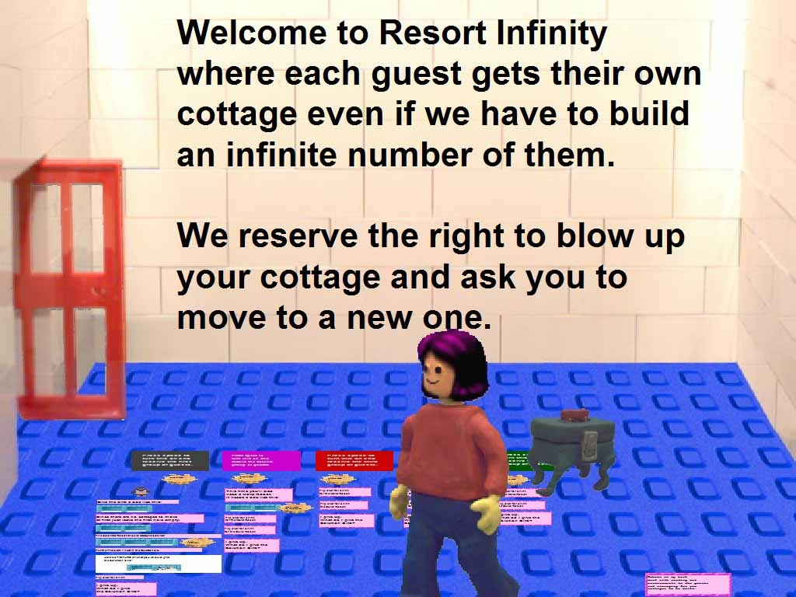

What does it do?
This city contains 5 successive problems for you, the hotel clerk, to solve.
You need to assign to each new guest an (often an infinite number) an address where their
cottage will be built.
How do I use it?
You should see the first group of guests arrive on the Problem 1 nest. For the first problem you just need to program a robot that will compute the address for each guest. The robot is given a box with the guest number and group number and needs to give the computed address to the bird.
The other problems have an additional twist. The resort is already being filled so how do you accommodate the new guests? The answer is to provide a robot that tells them where to move to. This robot receives a box with a current address and a bird and computes a new address. (The guest then blows up the cottage and arranges to be put in a new cottage at the new address.)
Remember you never want to have two or more cottages at the same address!
If you need help just flip over some of the text pad hints.
It is fun to give the Solution bird a box, press F8, and fly over the city. Press F8 to start the robots up again.
How does it work?
Under each problem is a team of robots that generates the guests. In the
lower right-hand corner of the room is a text pad that has robots on the back.
These robots deal with broadcasting an announcement to the existing guests (and
those guests still arriving and being handled by robots set up by solving previous
problems). The robots also deal with building new cottages.
To have fun, solve some challenging puzzles, and maybe learn something about infinity.
Where is some help?
A teachers guide to this activity can be found here.
Further reading
David Hilbert came up with the idea of Hotel Infinity about a hundred years
ago. But he didn't publish anything on it. George Gamow wrote about it in 1948
and since then hundreds of variations have been written. Just type "Hotel
Infinity" into Google to see some of them.

These instructions and hints are the city's own flip-over pads, gathered here. Click a hint to "flip it over".
Point at a problem's sign and press the space bar to turn it on; from then on a new guest arrives on that problem's nest every 5 seconds, forever. Solutions are given to the Solution bird as a two-hole box labelled Move and Build. The Build hole holds a box of your address robot and the guests' nest; the Move hole holds a move robot and nest (empty until problem 2). Never two cottages at the same address. Press F8 to pause the robots and look around; F8 again resumes. Save your city after each solved problem.
“Since there are no cottages to move at first just leave the first hole empty.” “Put the Problem 1 nest in the Guests hole.” Your Address Robot accepts a box with the guest's number and a bird, and must give the bird the address where that guest's cottage is built. Train it exactly the way the activity sheets trained Doubler and Add 1.
Address 1 — “a robot that gives each guest the next address”: guest i lives at cottage i. Give the guest's own number to the bird.
The ready-made solution box — the page's Answer to problem 1 button puts it in your hand.
“This time you'll also need a Move Robot. It needs a box like this:” a current address and a bird. It computes where that guest should move and gives the new address to the bird; the guest blows up their cottage and moves. “Fill the empty Guests hole with the Problem 2 nest.”
“Add 5 to the current address and give the result to the bird.” Everyone moves up five; the five newcomers get cottages 1 to 5. (Is the Build robot any different from problem 1's?)
“Multiply the current address by 2 and give the result to the bird.” The old guests take the even addresses; “this robot puts the new guests in the odd numbered cottages” — new guest i builds at 2i−1.
“Multiply the current address by 4 and give the result to the bird.”
“This robot assigns new guests to addresses that are not multiples of 4” — guest i of group j builds at 4i−j. (Merging the three guest streams into one, with Activity 2's Merge robot, also works.)
“This one moves the guests like problem 3” — double the address. Then the city's own build robot “assigns new guests to odd addresses by successive squares in the upper left corner of the square of all new guests”; its hint walks the diagonal: “the next addresses are 2,2 then 1,2 then 3,1 then 3,2 then 3,3 then 2,3 then 1,3”. (The teachers' guide offers the classic alternative: send group j's guest i to the jth prime raised to the ith power — wasteful of addresses, and that waste is worth discussing.)
“Robots on my back deal with sending out announcements to the guests and arranging for new cottages to be built” — the text pad in the lower right corner of the room runs the machinery; you never need to touch it.